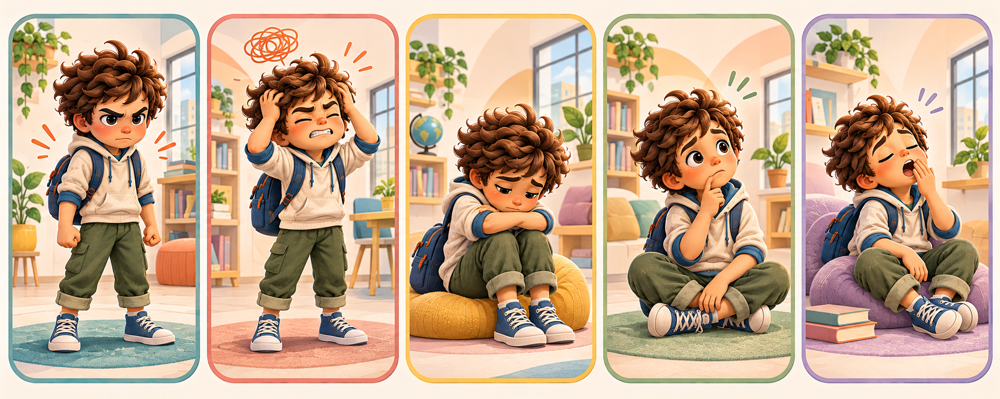

Miro · elijo · pido apoyo
¿Cómo se siente mi cuerpo hoy?
Queñal muestra cinco experiencias posibles. Puedes elegir una tarjeta, escuchar opciones y decidir cuál probar. También puedes cerrar sin elegir.
Ver tarjetas
No hay una respuesta obligatoria
Una emoción no define a la persona. Las opciones ayudan a comunicar una necesidad; no diagnostican ni reemplazan el acompañamiento adulto.
5 tarjetas libres
Elige la que se parece más
Si ninguna coincide, puedes decir “otra” o pedir ayuda sin explicar todavía.
Para acompañar
Describe lo que observas sin asegurar lo que la otra persona siente. Ofrece pocas opciones y acepta “no sé”, silencio o una pausa. Evita retener la respiración o exigir una técnica cuando incomoda.